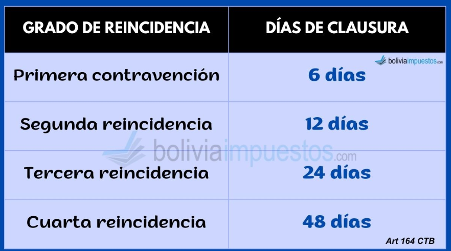

CONTROL TRIBUTARIO

DENUNCIA
En este control tributario, el SIN de oficio podrá verificar el correcto cumplimiento de la obligación de emisión de factura, nota fiscal o documento equivalente mediante operativos de control.
Una vez comprobando, que el contribuyente no ha emitido y que ha incumplido la emisión de la factura, el SIN procede con la emisión de un acta de fiscalización, donde se detallan todo lo observado, se apertura un proceso sancionador notificando este acto administrativo al contribuyente.
Se aplican sanciones progresivas en función del grado de reincidencia del contribuyente.
